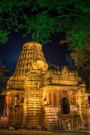
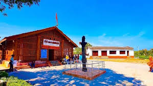
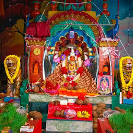

Bhoramdeo Temple


Location: Kawardha district, Chhattisgarh
Deity: Lord Shiva (as Bhoramdeo)
Architecture: Intricate sculptures and carvings resembling Khajuraho temples
Significance: Known for erotic sculptures and artistry
Historical Background: Built between the 11th and 12th centuries
Religious Importance: A sacred site for Lord Shiva devotees
Legends: Linked with Bhoramdeo, considered a form of Lord Shiva
Tourism: Surrounded by lush forests, popular for spiritual and heritage tourism
Kawardha Danteshwari Temple


Location: Kawardha, Chhattisgarh
Deity: Goddess Danteshwari (form of Goddess Durga)
Architecture: Traditional Chhattisgarhi style with intricate carvings
Significance: One of the 51 Shakti Peethas
Legend: Believed to be where the tooth of Goddess Sati fell
Religious Importance: Major Shakti worship center and pilgrimage site
Festivals: Navaratri and other Durga-centric celebrations attract thousands
Historical Background: Ancient and revered site, rooted in local belief systems